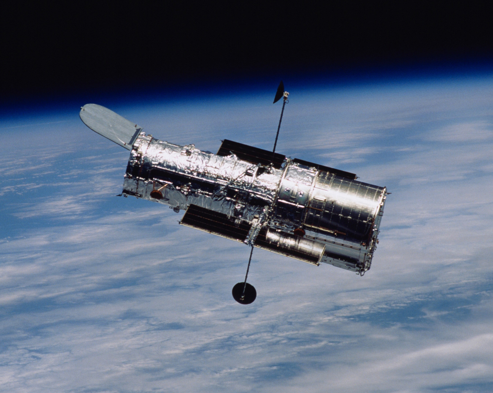
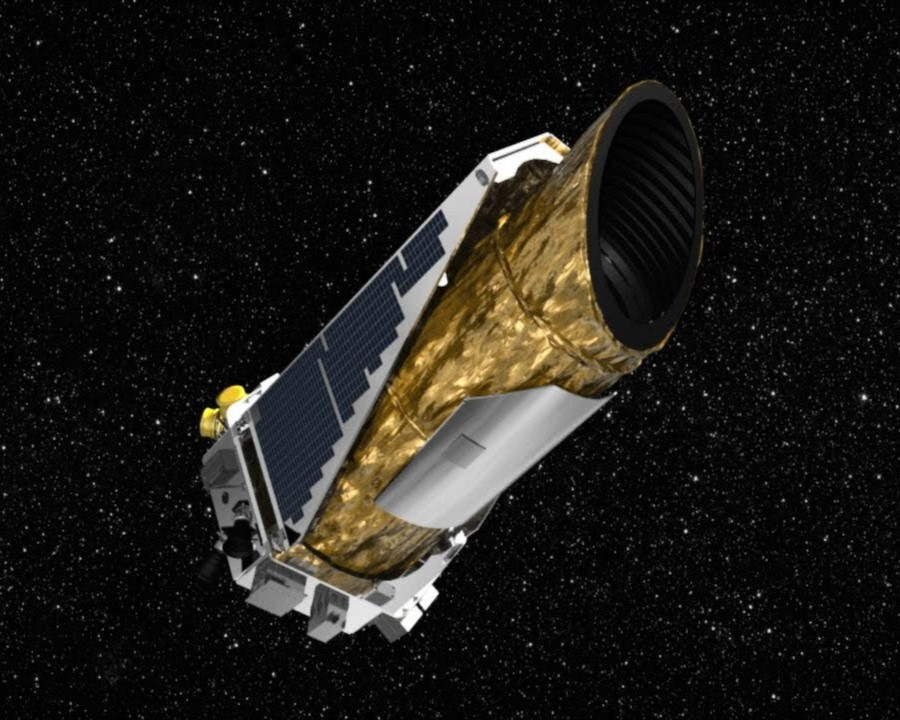
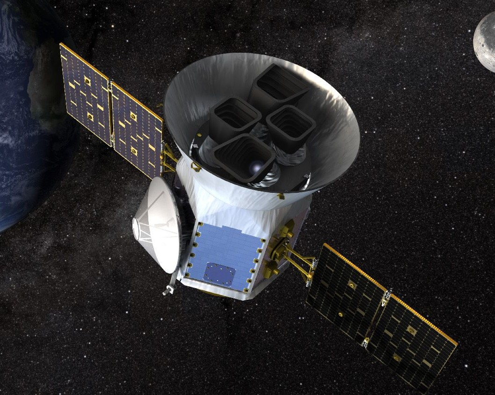

Un télescope spatial est un télescope placé hors de l'atmosphère terrestre, l'avantage par rapport à ceux qui sont sur Terre, ce que leurs observations ne sont pas perturbés par la pollution, le soleil ou l'atmosphère en soi, ce que
permet également d'observer dans plusieurs rayonnements lumineux différents, comme l'infrarouge, ultraviolet, etc... Ceux ci sont les plus notables télescopes qui ont opéré ou qui fonctionnent encore:
Hubble

Kepler

TESS

James Webb